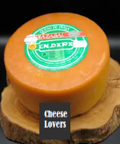

Stilton Azul D.O.P.

Gudbrand

Cabrales D.O.P

Idiazabal D.O.P.
Bienvenidos a nuestra tienda online de quesos nacionales con sede en Galicia. Nos apasiona ofrecer la mejor selección de quesos artesanales y de alta calidad de toda la península. Desde los quesos más suaves hasta los más intensos, pasando por los más curados y aromáticos, encontrarás una amplia variedad de sabores y texturas en nuestra tienda. Además, cuidamos de que todos nuestros productos sean elaborados con ingredientes naturales y respetando las tradiciones y el medio ambiente. ¿Te apetece probarlos? ¡Haz tu pedido y lo recibirás en casa en un santiamén!
Stilton Azul D.O.P.
Gudbrand
Cabrales D.O.P
Idiazabal D.O.P.
El queso es un producto alimenticio obtenido a partir de la leche, generalmente de vaca, oveja o cabra, aunque también puede ser de otros animales. Es un alimento muy nutritivo y versátil que se consume en todo el mundo y se utiliza en una amplia variedad de platos, desde sándwiches hasta pizzas y ensaladas. Existen muchos tipos de queso, cada uno con su propio sabor y textura únicos. El queso también es conocido por sus propiedades nutricionales, como su contenido de proteínas, calcio y vitaminas.
Para elaborar queso, se comienza por coagular la leche con la adición de cuajo o ácido, lo que hace que las proteínas de la leche se agrupen y formen una masa sólida. Luego, se corta y se lava la masa para eliminar el suero, y se procede a moldearla y salarla según el tipo de queso que se desea obtener. Por último, el queso se deja madurar durante un periodo de tiempo que puede variar desde unas pocas semanas hasta varios años, lo que le confiere su sabor y textura característicos.
Los quesos europeos son reconocidos mundialmente por su calidad y sabor. Desde el francés brie hasta el suizo gruyere, cada país tiene su especialidad.
Además, en nuestra tienda ofrecemos una amplia variedad de productos como aceites, embutidos, vinos, especias y panes, que complementan a los quesos.
Los quesos españoles son famosos por su variedad y calidad, desde el manchego hasta el cabrales, deleitan a los amantes del queso.
Existen diversos tipos de leche que se utilizan para hacer quesos, entre ellos la leche de vaca, oveja, cabra y búfala, cada una aportando distintas características al queso.


¿Donde estámos?
Rúa do Pintor Laxeiro, 18, 36211 Vigo, Pontevedra